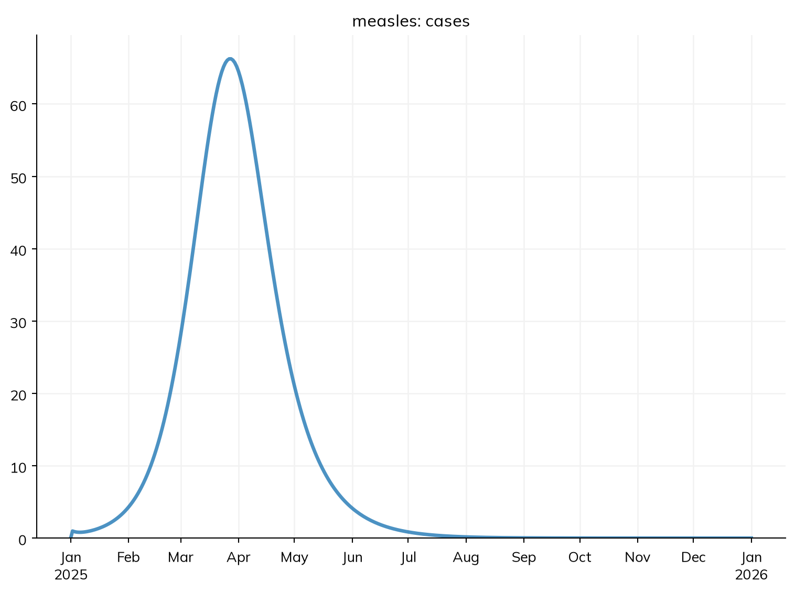
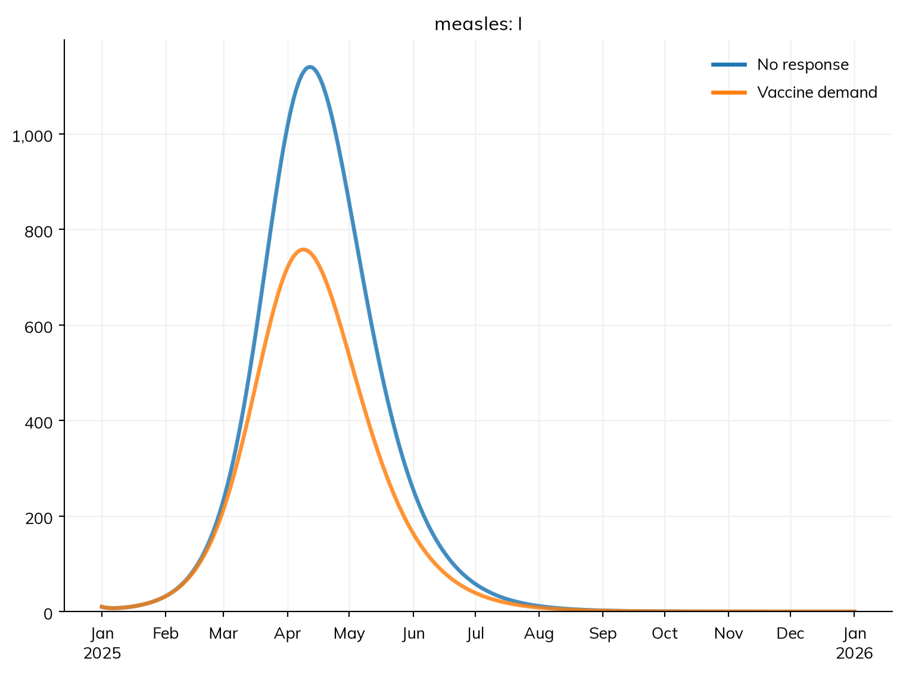

When people hear about an outbreak, some of them go and get vaccinated. How much does that slow the outbreak down, and what limits it?
Most of a Starsim model is declared: its states and transitions, the interventions given to it, and the results it reports. Declared parts run under every solver, and describe(), diagram(), and equations() show them. But some parts of a model are easier to say in code: a rule of behavior of your own, a quantity with dynamics of its own, or a result worked out in a way of your own. A module written as code is a Python class with a step() method, which Starsim calls once at each step, and which can read and change the rest of the sim. It sits in the same sim as the declared diseases.
A module written as code doesn’t make a model agent-based. A module that keeps a value for each person (whether each person has been vaccinated, say) needs agents, and a sim with one runs as agents; A5 – Custom modules writes modules like that. A module that keeps only numbers for the whole population, like the one in this tutorial, runs with the rest of the model as compartments, as an ODE. By the end of this tutorial, you will be able to:
write a function that Starsim calls at each step, and say when a class is needed instead;
write a module as a class, with parameters, a state of its own, and results;
read the model’s results and move people between states from a module, in a way that works under every solver;
compare scenarios that differ in a module’s parameters.
Before writing a module, check the table at the top of Custom modules in the user guide: many things that look as if they need code (vaccination, testing, treatment, contact tracing, and changes to parameters) can be declared.
The model so far
This is the measles model from T7 – Data and calibration, with the values that the fit found: β = 0.16, and 40% of infections reported. It runs for a year from 1 January, in a town of 100,000 people in three age groups, about 11% of whom are susceptible:
import starsim as ssS, E, I, R = ss.states('S E I R')infection = S >> E @0.16*I # β = 0.16 per contact per dayprogression = E >> I @ ss.days(10) # Latent for 10 days on averagerecovery = I >> R @ ss.days(8) # Infectious for 8 days on averagecases = ss.outcome(0.4*infection) # Reported cases: 40% of infectionsmeasles = ss.Disease(infection, progression, recovery, cases, init =dict(R=ss.by(age=[0.8, 0.92, 0.98])), # The share immune in each age group init_n =dict(I=10), # 10 people infectious at the start name ='measles',)measles.stratify(age={0: 0.3, 15: 0.6, 65: 0.1}) # Ages 0-14, 15-64, and 65+contacts = ss.contacts(ages=[0, 15, 65], matrix=[[10, 6, 1], [3, 8, 1], [3, 6, 3]]) # Contacts a day, between age groupssettings =dict(networks=contacts, total_pop=100_000, start='2025-01-01', stop='2026-01-01')sim = ss.Sim(measles, **settings)sim.run()sim.plot('measles.cases')
Sim: measles, 100,000 people, as an ODE, 2025-01-01 to 2026-01-01
measles: R0 = 18.1 (R = 2.81 at the start, with 11% susceptible), with 10 infectious at the start
Note: people do not age between the age groups, since nobody is born or dies; pass use_aging=True to age them
Done in 0.0043 s; measles: 9,358 infections; at most 1,140 infectious, on 2025-04-12

Vaccine demand
During measles outbreaks, demand for vaccination rises: parents who had put off vaccinating their children hear about cases in the news or from neighbors, and take them to a clinic. This is an intervention that nobody plans, and the model so far leaves it out. To add it, we need a rule for how many unvaccinated people seek vaccination each day. A simple one: the more cases people have heard about recently, the more of them seek it, up to some limit. Here, of the people still susceptible, a share seek vaccination each day that rises with the number of cases reported in the last week, reaching half of its highest value (10% a week) when 300 cases have been reported in a week.
None of the declared parts says this, so it is written as code. The smallest module is a function of the sim, which Starsim calls once each step; given as interventions=, it becomes an intervention. Inside it, sim.results has the results so far, and sim.ti is the index of the current time point, so the reported cases of the last 7 days are the last 7 values of the result cases. ss.move() moves people between the states of a declared disease, the same way under every solver: here, it moves the people vaccinated (93% of those who get a dose are protected) from S to R:
def vaccine_demand(sim):""" The unvaccinated seek vaccination at a rate that rises with the cases reported in the last week """ measles = sim.diseases.measles last_week = sim.results.measles.cases[max(sim.ti-7, 0):sim.ti].sum() # Cases reported in the last 7 days share = last_week/(last_week +300) # From 0 to 1, a half at 300 cases a week seeking = (ss.perweek(0.1)*share).to_prob(sim.t.dt) # The chance of seeking vaccination in this step ss.move(measles.S, measles.R, p=seeking*0.93) # Those vaccinated and protected become immunereturnsims = {'No response': ss.Sim(measles, **settings),'Vaccine demand': ss.Sim(measles, interventions=vaccine_demand, **settings),}msim = ss.parallel(sims)print('Solver:', msim.sims['Vaccine demand'].solver)msim.plot('measles.I')
MultiSim: 2 runs of 2 scenarios (No response, Vaccine demand)
Done in 1.6 s
Solver: ode

The sim still runs as an ODE ('ode'), since the function keeps nothing for each person. Demand for vaccination rises with the outbreak, and makes it smaller. But the function has problems that show as soon as we want to use it. Its numbers (300 cases, 10% a week, 93%) are fixed inside it, so a scenario with other values needs another function. It has no results of its own, so we can’t say how many doses were given. And its memory of the outbreak is a window of exactly 7 days, after which a case is forgotten at once, which isn’t how people remember news.
A module as a class
A module written as a class fixes all three. It inherits from one of Starsim’s module types (here ss.Intervention), and has:
Parameters, given with their defaults in __init__() with define_pars(), and changed by name when the module is made (update_pars() raises an error for a name it doesn’t know, which catches misspellings). Rates and durations are given as Starsim’s time parameters (e.g. ss.days(30), ss.perweek(0.1)), so that they mean the same whatever the length of the step.
A state of its own: here, a single number for the whole population, the cases that people remember. Rather than a fixed window, it is a memory that fades: each step, the new reported cases are added, and a share of what is remembered is forgotten, so that a case is remembered for memory (30 days) on average. This is a small ODE of the module’s own, dM/dt = cases − M/memory, solved a step at a time.
Results of its own, given in init_results() with define_results(), and filled in at each step at self.ti. kind='flow' says that doses are events in each step (so they are summed over time), and kind='stock' that the cases remembered are a quantity at each time point.
A step() method, which does the work. In it, self.sim is the sim, self.t.dt the length of a step, and self.pars the parameters.
A module can also limit what it does, which a rule of behavior often needs: here, the clinics can give at most capacity doses a day (none by default), and people who can’t be served stay susceptible, and seek a dose again the next day:
class VaccineDemand(ss.Intervention):""" Unvaccinated people seek vaccination at a rate that rises with the outbreak cases they remember """def__init__(self, memory=ss.days(30), half=300, max_rate=ss.perweek(0.1), capacity=None, efficacy=0.93, **kwargs):super().__init__()self.define_pars( memory = memory, # How long a reported case is remembered, on average half = half, # The number of cases remembered at which demand is half its highest max_rate = max_rate, # The highest rate at which unvaccinated people seek vaccination capacity = capacity, # The most doses the clinics can give, as a rate (None for no limit) efficacy = efficacy, # The share of those vaccinated who are protected )self.update_pars(**kwargs)self.remembered =0.0# The cases that people remember, for the whole populationreturndef init_results(self):super().init_results()self.define_results( ss.Result('doses', kind='flow', scale=False, label='Doses given'), ss.Result('remembered', kind='stock', scale=False, label='Cases remembered'), )returndef step(self): measles =self.sim.diseases.measles dt =self.t.dt# Remember the cases reported in the last step, and forget a share of those remembered new_cases =self.sim.results.measles.cases[self.ti-1]self.remembered += new_cases -self.remembered*(dt/self.pars.memory)# The doses sought, limited by what the clinics can give share =self.remembered/(self.remembered +self.pars.half) seeking = (self.pars.max_rate*share).to_prob(dt) doses = seeking*measles.count(measles.S)ifself.pars.capacity isnotNone: doses =min(doses, self.pars.capacity.to_events(dt))# Those protected become immune ss.move(measles.S, measles.R, n=doses*self.pars.efficacy)self.results.doses[self.ti] = dosesself.results.remembered[self.ti] =self.rememberedreturn
measles.count(measles.S) is the number of people in S now, under every solver, and ss.move(..., n=...) moves a number of people rather than a share. self.sim.results.measles.cases[self.ti-1] is the reported cases of the last step: a module that is not a disease steps before the diseases, so the cases of the step now being run aren’t known yet. Because the module keeps only numbers for the whole population, the sim runs as an ODE, as before. Given to the sim, the module is named after its class in lower case, so its results are in sim.results.vaccinedemand.
Comparing scenarios
With parameters, the same module can be used for each scenario: here, with no response (nobody seeks vaccination: a highest rate of 0), with demand that is met in full, and with clinics that can give at most 30 doses a day, about what a few clinics in a town of 100,000 might manage on top of their usual work:
sims = {'No response': ss.Sim(measles, interventions=VaccineDemand(max_rate=ss.perweek(0)), **settings),'Demand met in full': ss.Sim(measles, interventions=VaccineDemand(), **settings),'At most 30 doses a day': ss.Sim(measles, interventions=VaccineDemand(capacity=ss.perday(30)), **settings),}msim = ss.parallel(sims)msim.plot(['measles.I', 'vaccinedemand.doses'])
MultiSim: 3 runs of 3 scenarios (No response, Demand met in full, At most 30 doses a day)
Done in 1.0 s
With demand met in full, the outbreak infects about 5,400 people rather than 9,400: about 4,900 doses prevent about 4,000 infections. The doses rise with the cases, and peak in mid-March, during the steep rise of the outbreak, when each person protected breaks the most chains of infection; after that, fewer people are left susceptible to seek a dose, although people remember more cases than ever until April. With clinics that can give at most 30 doses a day, they run at capacity for two months, from late February to late April, and the people who can’t be served in March, when it matters most, are often infected while they wait: about 6,600 people are infected, and fewer doses are given, since fewer people are left to seek them. Even met in full, the demand prevents less than half of the infections, because it is driven by the outbreak, and so only starts once the outbreak is under way; vaccination before an outbreak, or a campaign at its start (T5), doesn’t have to wait for it.
sim.describe() lists the module, but can’t say what it does, since that is in its code; this is the price of writing a part of the model as code. A module’s parameters can be fitted to data like any other (T7), if they are given as ss.par with bounds, e.g. VaccineDemand(half=ss.par(300, bounds=[50, 2000])).
What changes with a module written as code
The solver. A module that keeps only numbers for the whole population, like this one, runs under every solver, and the sim runs as an ODE unless something else needs agents. A module that keeps a value for each person (a state made with define_states(), such as whether each person has sought a dose) runs only as agents, and a sim with one runs as agents by itself, with the declared diseases in it unchanged: see A5 – Custom modules. If a module’s code asks for individual people (e.g. measles.I.uids) in a run without agents, the run stops and says so.
The order. In each step, a module that is not a disease runs before the diseases, so what it does (here, protecting people) applies to the transmission in the same step, and it sees the results of the previous step.
The sim’s own copy. The sim works on its own copy of each module. To reach a disease or another module from a module, use self.sim in step() (e.g. self.sim.diseases.measles), not a variable from outside the class.
Custom modules in the user guide covers the rest: the other kinds of module (analyzers, connectors, networks, demographics, and diseases written as code), states for each person, the order in which Starsim calls a module’s methods, and the pitfalls. Analyzers covers analyzers, modules that record something without changing the model.
Exercises
How much does it matter how long people remember the cases they hear about? Run VaccineDemand() with a memory of 10 days and of 90 days, and compare the infections and doses with the 30 days above. Does each extra dose prevent as many infections as the ones before? Why not?
People who hear about an outbreak may also avoid contact with others. Add a second effect of the cases remembered: a modifier, ss.modify(measles.rel_sus, multiply=...), whose multiply= is a function of the sim that returns 1 − 0.3 × the share used for demand (so contacts fall by up to 30%). Read the cases remembered from the module, as sim.interventions.vaccinedemand.remembered. How much smaller is the outbreak?
Run the model with demand met in full as agents, one for each person (n_agents=100_000), and compare the infections and doses with those of the ODE. Does the module need any change? Why not?